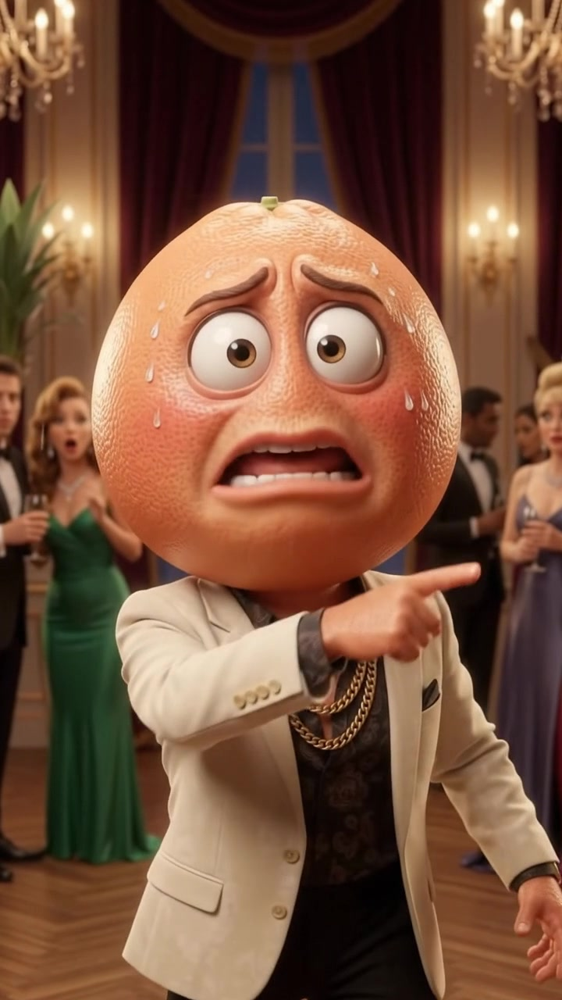

Escena 1
▶
00:00.0
/
01:36.1

ESCENA 1 / 15
Bruno (Toronja)
HOOK
El Pánico de Bruno
Archivo: k1.mp4 • En Timeline: 00:00.0s - 00:06.0s
Guion / Diálogo de la Escena:
"¡Órale, seguridad! ¡Sáquenme a este güey de mi fiesta antes de que llame a la patrulla y se lo lleven al bote!"
✂️ Editor de Recorte de esta Escena (Trim Manual)
Silencio Inicial a Cortar:
0.00s
Punto de Corte Final:
6.02s
⚠️
Pausas Intermedias en el Diálogo (Sin Recortar):
Ninguna pausa intermedia en este clip.
Línea de Tiempo Multipista
Video Útil
✂️ Silencio Cortado
⚠️ Pausa Intermedia
🎵 Música BGM
Zoom:
Pista 1: Video (15 Escenas)
Pista 2: Voz y Detección de Silencios (-28dB)
Pista 3: Música de Fondo (music-frutas.mp3)
00:00.0